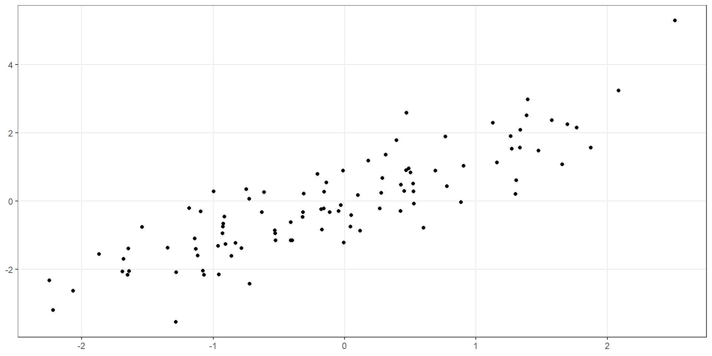
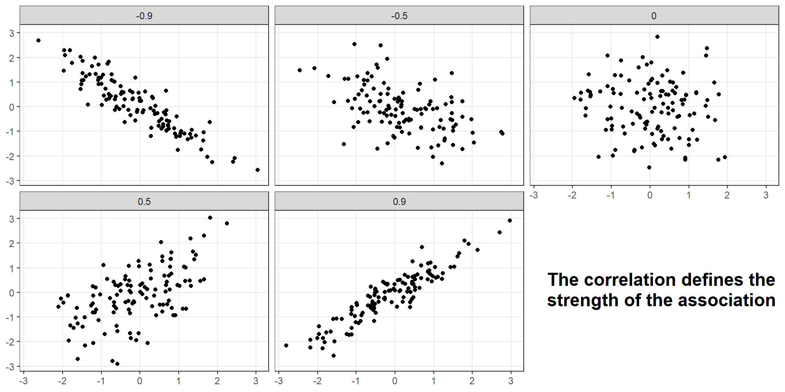
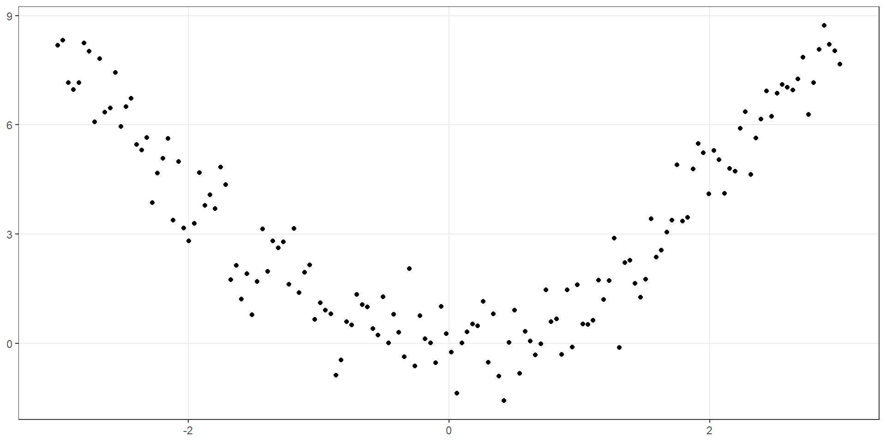
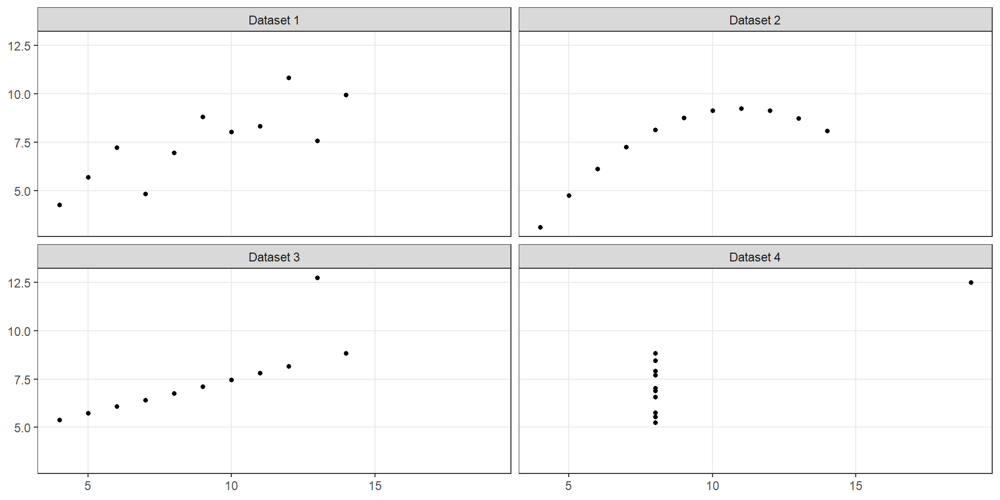
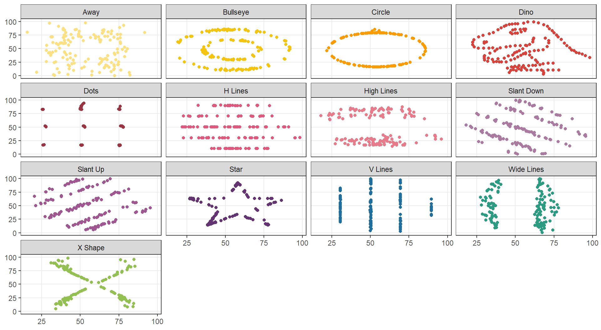
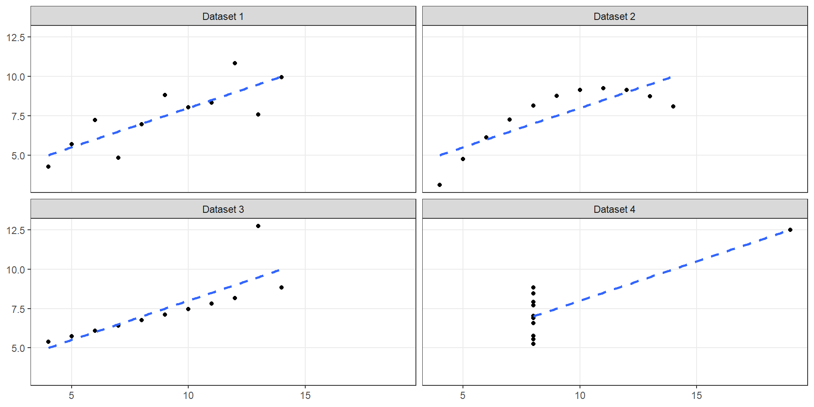
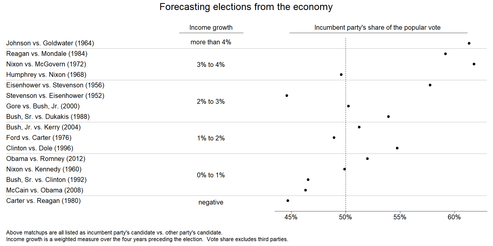
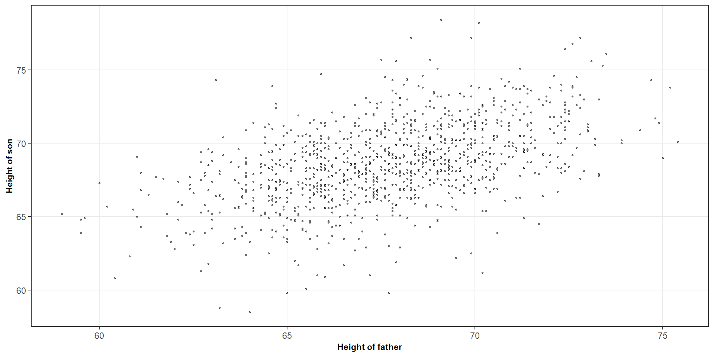
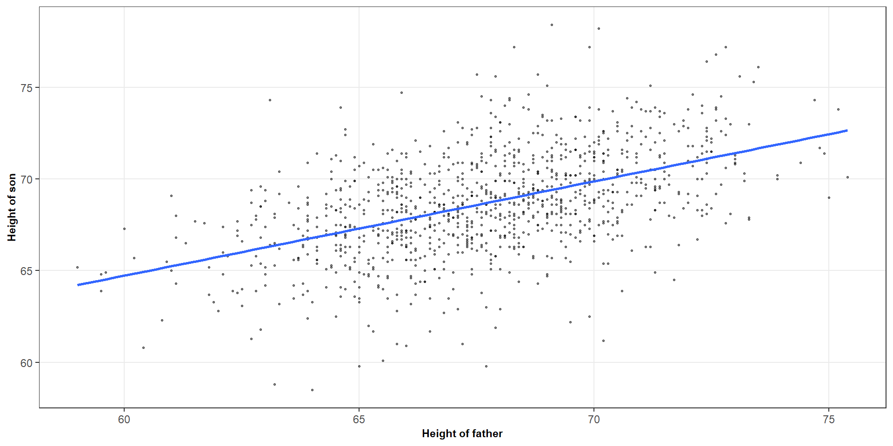
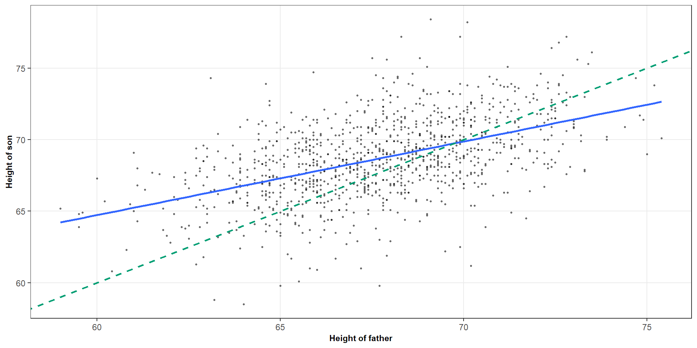

| X variable | Y variable | ||||
|---|---|---|---|---|---|
| Dataset | Mean | SD | Mean | SD | r |
| Dataset 1 | 9 | 3.32 | 7.5 | 2.03 | 0.816 |
| Dataset 2 | 9 | 3.32 | 7.5 | 2.03 | 0.816 |
| Dataset 3 | 9 | 3.32 | 7.5 | 2.03 | 0.816 |
| Dataset 4 | 9 | 3.32 | 7.5 | 2.03 | 0.817 |
ST303 - Linear Models
We want to understand how two quantitative variables are related
By the end of this lecture, you should be able to:

Question: What do you notice about the relationship between (X) and (Y)?
When examining a scatterplot, we typically consider three things
Direction
Strength
Form

The sample correlation coefficient measures the strength and direction of the linear association between two quantitative variables
\[ r = \frac{S_{xy}}{\sqrt{S_{xx} \times S_{yy}}} \]
A correlation of zero means there is no linear association
It does not rule out a nonlinear relationship

| X variable | Y variable | ||||
|---|---|---|---|---|---|
| Dataset | Mean | SD | Mean | SD | r |
| Dataset 1 | 9 | 3.32 | 7.5 | 2.03 | 0.816 |
| Dataset 2 | 9 | 3.32 | 7.5 | 2.03 | 0.816 |
| Dataset 3 | 9 | 3.32 | 7.5 | 2.03 | 0.816 |
| Dataset 4 | 9 | 3.32 | 7.5 | 2.03 | 0.817 |

| X variable | Y variable | ||||
|---|---|---|---|---|---|
| Dataset | Mean | SD | Mean | SD | r |
| Dataset 1 | 54.3 | 16.8 | 47.8 | 26.9 | -0.0641 |
| Dataset 2 | 54.3 | 16.8 | 47.8 | 26.9 | -0.0686 |
| Dataset 3 | 54.3 | 16.8 | 47.8 | 26.9 | -0.0683 |
| Dataset 4 | 54.3 | 16.8 | 47.8 | 26.9 | -0.0645 |
| Dataset 5 | 54.3 | 16.8 | 47.8 | 26.9 | -0.0603 |
| Dataset 6 | 54.3 | 16.8 | 47.8 | 26.9 | -0.0617 |
| Dataset 7 | 54.3 | 16.8 | 47.8 | 26.9 | -0.0685 |
| Dataset 8 | 54.3 | 16.8 | 47.8 | 26.9 | -0.069 |
| Dataset 9 | 54.3 | 16.8 | 47.8 | 26.9 | -0.0686 |
| Dataset 10 | 54.3 | 16.8 | 47.8 | 26.9 | -0.063 |
| Dataset 11 | 54.3 | 16.8 | 47.8 | 26.9 | -0.0694 |
| Dataset 12 | 54.3 | 16.8 | 47.8 | 26.9 | -0.0666 |
| Dataset 13 | 54.3 | 16.8 | 47.8 | 26.9 | -0.0656 |

Recall that the formula for \(R^2\) is
\[ R^2 = \frac{SS_R}{SS_T} \qquad \text{OR} \qquad R^2 = 1 - \frac{SS_E}{SS_T} \]
It describes the proportion of the observed variation in \(Y\) accounted for by the fitted linear model
\[ R^2 = r^2 \] For example, if we got \(r = 0.8\), then we can say that \(R^2 = 0.64\)
The fitted linear model accounts for 64% of the variation in the response around its mean
Two datasets have correlations of 0.8 and −0.8.
Do they have the same \(R^2\)?
Word of caution
Two \(R^2\) values may be similar even when the relationships have different structures
A high \(R^2\) does not guarantee that a linear model is appropriate
Always consider the scatterplot and relevant model assumptions


# Calculate a correlation coefficient between economic growth and voting percentage
cor(hibbs$growth, hibbs$vote)
## [1] 0.7614763
# Turn this into an R squared statistic
cor(hibbs$growth, hibbs$vote)^2
## [1] 0.5798462
# Fit a simple linear model and verify the statistic
voting_model <- lm(vote ~ growth, data = hibbs)
summary(voting_model)
##
## Call:
## lm(formula = vote ~ growth, data = hibbs)
##
## Residuals:
## Min 1Q Median 3Q Max
## -8.9929 -0.6674 0.2556 2.3225 5.3094
##
## Coefficients:
## Estimate Std. Error t value Pr(>|t|)
## (Intercept) 46.2476 1.6219 28.514 8.41e-14 ***
## growth 3.0605 0.6963 4.396 0.00061 ***
## ---
## Signif. codes: 0 '***' 0.001 '**' 0.01 '*' 0.05 '.' 0.1 ' ' 1
##
## Residual standard error: 3.763 on 14 degrees of freedom
## Multiple R-squared: 0.5798, Adjusted R-squared: 0.5498
## F-statistic: 19.32 on 1 and 14 DF, p-value: 0.00061


This is regression towards the mean
This helps explain why extreme observations on one variable tend to be associated with less extreme expected values of the other variable